Всеукраїнська рекламна коаліція
Найкраща реклама України — і ті, хто її робить
Вітрина ринку: найсильніші роботи сезону, рейтинги, які визначають лідерів, і дані про ринок. 160+ агенцій, медіа та брендів в одному клубі.
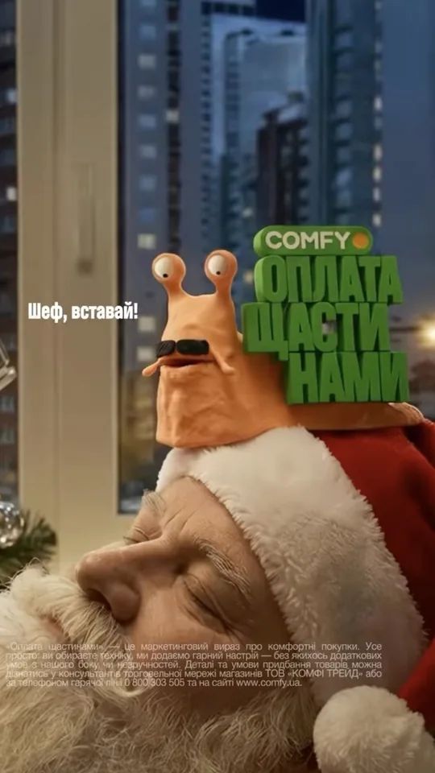
REEL Comfy · «Оплата щастинами» Агенція · нагорода — уточнити 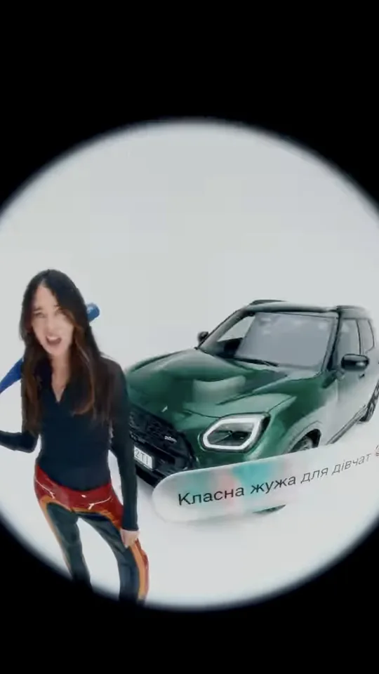
REEL «Класна жужа для дівчат» Агенція · нагорода — уточнити 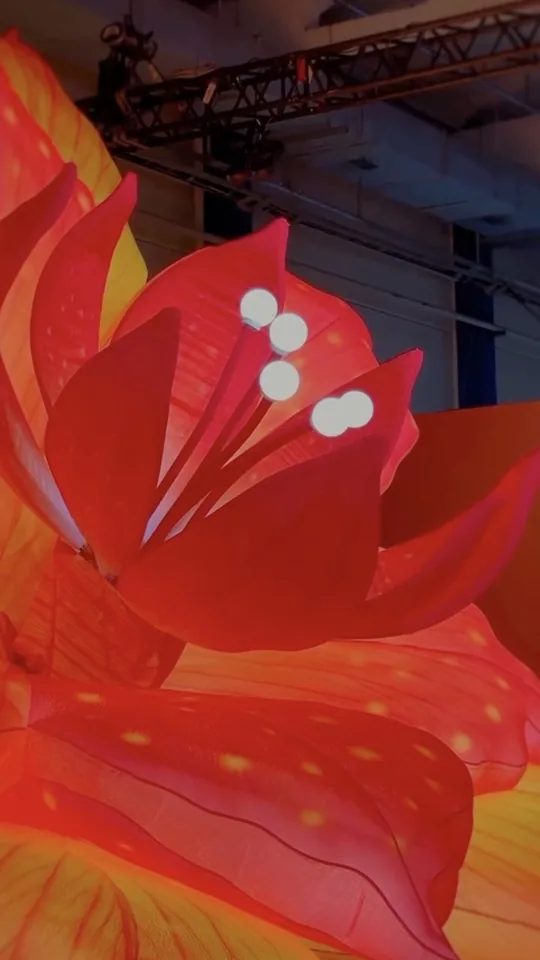
REEL Інсталяція · назва роботи Агенція · нагорода — уточнити REEL Comfy · «Оплата щастинами» Агенція · нагорода — уточнити REEL «Класна жужа для дівчат» Агенція · нагорода — уточнити REEL Інсталяція · назва роботи Агенція · нагорода — уточнити 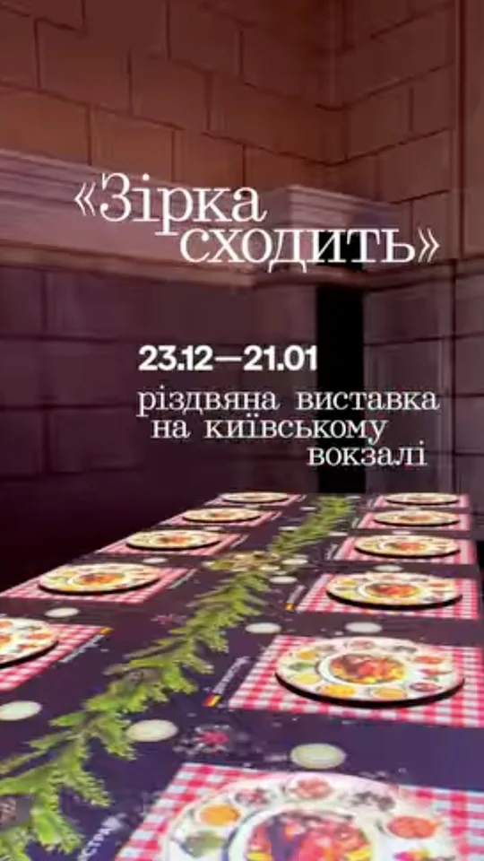
REEL «Зірка сходить» Різдвяна виставка на київському вокзалі 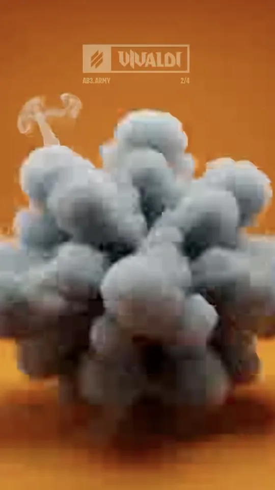
REEL AB3.ARMY · VIVALDI Агенція · нагорода — уточнити REEL Comfy · «Оплата щастинами» Агенція · нагорода — уточнити REEL «Зірка сходить» Різдвяна виставка на київському вокзалі REEL AB3.ARMY · VIVALDI Агенція · нагорода — уточнити REEL Comfy · «Оплата щастинами» Агенція · нагорода — уточнити REEL «Класна жужа для дівчат» Агенція · нагорода — уточнити REEL Інсталяція · назва роботи Агенція · нагорода — уточнити REEL «Зірка сходить» Різдвяна виставка на київському вокзалі REEL «Класна жужа для дівчат» Агенція · нагорода — уточнити REEL Інсталяція · назва роботи Агенція · нагорода — уточнити REEL «Зірка сходить» Різдвяна виставка на київському вокзалі
REEL AB3.ARMY · VIVALDI Агенція · нагорода — уточнити REEL Comfy · «Оплата щастинами» Агенція · нагорода — уточнити REEL «Класна жужа для дівчат» Агенція · нагорода — уточнити REEL AB3.ARMY · VIVALDI Агенція · нагорода — уточнити REEL Comfy · «Оплата щастинами» Агенція · нагорода — уточнити REEL «Класна жужа для дівчат» Агенція · нагорода — уточнити
Effie Awards Ukraine 2026 триває суддівство · 320+ суддівUkrainian Creative Stories 2026 переможці оголошеніРейтинг креативності 2026 оновленоВступна кампанія ВРК заявки приймаються щомісяцяEffie Awards Ukraine 2026 триває суддівство · 320+ суддівUkrainian Creative Stories 2026 переможці оголошеніРейтинг креативності 2026 оновленоВступна кампанія ВРК заявки приймаються щомісяця
160 +
членів ВРК: агенції, медіа, бренди, асоціації
25 +
років ВРК визначає стандарти ринку
320 +
експертів у журі Effie Awards Ukraine 2026
$20 млрд
обсяг рекламного ринку 2025 — оцінка ВРК
МИ ЗМАГАЄМОСЯ НЕ З КОНКУРЕНТАМИ, А ЗА РЕЗУЛЬТАТ КЛІЄНТА. НАС ВЕДЕ АЗАРТ ДОСЛІДНИКА: ШУКАТИ НОВІ СПОСОБИ ДОСЯГАТИ ПОКАЗНИКІВ.
Рейтинги ВРК · сезон 2025–2026 · Ефективність (Effie)
Хто робить ринок
Лідерів визначають роботи: бали за нагороди на Effie, КМФР, ADC*UA, Ukrainian Design і міжнародних фестах. Кожне місце підкріплене кейсами.
Як рахуємо — методика
Креативність Ефективність Міжнародні фести Вибір рекламодавця Best Marketing Teams Медіаагенції
#1 Minefields Honey Saatchi & Saatchi Ukraine, Starcom Ukraine · клієнти: МЗС України, KERNEL
Опис кейсу #2 «Україна стоїть, бо стоїть піхота» Культурні Сили України · клієнт: Сухопутні війська ЗСУ
Опис кейсу #3 «Ветеран-Холостяк: змінюючи сприйняття героїв» СТБ, Starlight Creative · Гран-прі Effie
Опис кейсу 4 Назва агенції 124 5 Назва агенції 115 6 Назва агенції 106 7 Назва агенції 97 8 Назва агенції 88 9 Назва агенції 79 10 Назва агенції 70 Повний рейтинг
Хто є хто на ринку 2026
Усі 160+ Комунікаційні Медіа Digital PR Дослідницькі Продакшн Рекламодавці Асоціації
У цій категорії поки немає членів на головній. Повний каталог — на vrk.org.ua.
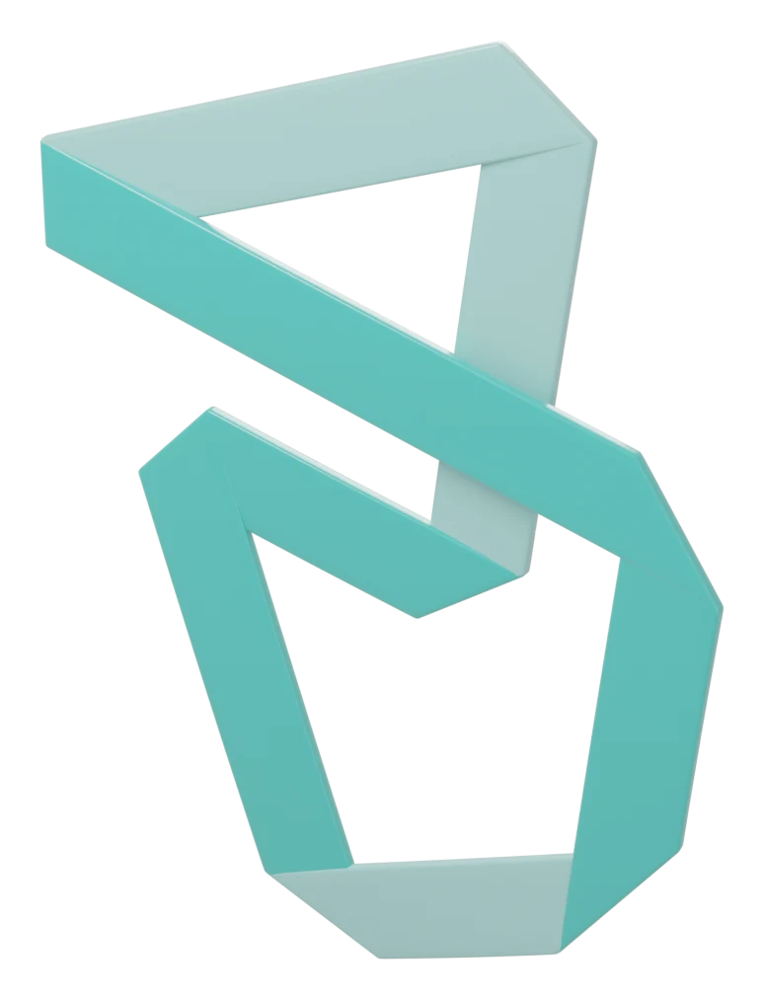
Кращий кейс Postmen з бази робіт ВРК
Дослідження ВРК
Аналітика ринку
Не назви звітів, а головне з них — одним реченням. Кожна цитата веде у повне дослідження.
Усі дослідження
+30%
Рекламно-комунікаційний ринок України у 2025 році зріс на XX%. Прогноз на 2026 — ₴XX млрд.
Обсяг ринку 2025 і прогноз 2026 · ВРК та індустріальні асоціації
Читати дослідження 50%
маркетинг-директорів ТОП-100 рекламодавців планують збільшити маркетингові бюджети у 2026 році.
Тенденції в управлінні маркетинговими комунікаціями 2025 · ВРК × Factum Group
Читати дослідження $6 тис.
медіанна зарплата креативного директора в Києві. Найбільший дефіцит — у стратегах і продюсерах.
Рівень зарплат у креативній сфері · травень 2025
Читати дослідження * цифри-заглушки: реальні значення беремо з PDF досліджень ВРК
Отримуй аналітику ринку першим. Ділись своєю — і впливай на оцінку ринку.
Члени ВРК входять в експертні групи, що рахують обсяги ринку й рейтинги, і отримують дані раніше за всіх.
Вступити до ВРК
Конкурси й фестивалі ВРК
Нагорода — трон для найкращого продукту
На першому плані — роботи переможців. Статуетка лише позначає, чий продукт кращий.
● Сезон 2026: триває суддівство Effie Awards Ukraine Найвища оцінка ефективності маркетингу. 100 категорій, 320+ суддів, результати входять у світовий Effie Index.
● 2026: переможці оголошені Ukrainian Creative Stories Два дні креативу, дизайну і ремесла. Нагороди КМФР, ADC*UA Awards, Ukrainian Design: The Very Best Of, CRAVE і Brave Awards.
НАПРЯМИ
5 напрямів ВРК У кожному — проєкти, де можна брати участь
01 / 05«
»
01 Представлення ринкуОбсяги ринку й прогнози · Рейтинги ВРК · Best Marketing Teams · Вибір рекламодавця · Foreign Markets Access · MADmap
Долучитися 02 Захист інтересів галузіЮридичні експертизи реклами · Стандарти: тендери, кошторис, ШІ · Законодавство про рекламу · Позиція галузі для держави
Долучитися 03 Освіта і конкурсиEffie Awards Ukraine · Ukrainian Creative Stories · CRAVE Awards · Innovation Awards Ukraine · Klekit
Долучитися 04 Соціальна місіяBrave Awards · ІнфоЗброя × Сили безпілотних систем · Комітет сталого розвитку
Долучитися 05 Інформаційна і PR-підтримкаcrUAtivity · Unpacking Ads · VRK Newsletter · Kakadu — музей креативу · Канали VRK inform
Долучитися
Підрозділи і клуби — долучайся як фахівець
ADC*UA Клуб креативців України, локальне представництво ADC Europe
Долучитися DDC Digital Development Committee: стандарти й дослідження digital-розробки
Долучитися Комітет медіаагенцій Оцінка обсягів медіаринку й медійні рейтинги
Долучитися Комітет креативних агенцій Стандарти співпраці з клієнтами, тендери, кошториси
Долучитися Комітет сталого розвитку Соціальні проєкти й партнерство з Силами оборони
Долучитися
Членство у ВРК
Що дає ВРК
Пʼять речей, які агенція отримує з першого дня членства.
Аналітика ринку Обсяги ринку, зарплати, тенденції — раніше за всіх. Ділись своїми даними й впливай на оцінку ринку.
Стандарт галузі Планка, до якої вже дійшли колеги: правила тендерів, конструктор кошторису, рекомендації щодо ШІ.
Верифікація Знак члена ВРК: ти серед визнаних ринком. Агенція — в каталозі, який дивляться клієнти.
Юридичний захист Безкоштовна експертиза рекламних матеріалів на відповідність закону — для дійсних членів.
Видимість Кейси на вітрині ВРК, спікерство на подіях, місце в журі Effie, новини через канали ВРК.
Запитай ВРК Консультації й нетворк для членів — на конкретні питання:
+ закриті зустрічі членів, комітети, журі конкурсів
Дійсний член 18 000 грн / рік
Голос на Загальних зборах Участь в експертних групах рейтингів і прогнозів −20% на Effie, КМФР та акредитації Юридичні експертизи безкоштовно Інфопідтримка через канали ВРК Подати заявку Асоційований член 4 500 грн / рік
Дорадчий голос −5% на конкурси та акредитації Юридичні експертизи — платно Інфопідтримка через канали ВРК Подати заявку Вступний внесок — 2 000 грн одноразово. Повна таблиця переваг →
1 Рекомендація від одного з дійсних членів ВРК
2 Заява й картка члена заповнити, підписати, надіслати
3 Рішення Наглядової ради на найближчому засіданні
4 Рахунок і доступ до клубу, каналів і знижок
Голоси індустрії
Що відбувається на ринку
Інтервʼю, новини й дедлайни у форматах, звичних із соцмереж: вертикальне відео, картки, короткі дайджести.
Усі новини Усе Unpacking Ads crUAtivity Дедлайни Результати Дослідження Newsletter
Unpacking Ads Володимир Дегтярьов Хартія · 16.10.2026
Unpacking Ads Сергій Колос AICON · 09.10.2026
Unpacking Ads Валентин Панюта про карʼєру й кейси
Результати
Завершено прийом заявок на Effie Awards Ukraine 2026: перші статистичні результати та старт суддівства 13.10.2026
crUAtivity
Effie Europe: 30 років ефективності та українська історія 15.10.2026
Newsletter
VRK newsletter | 03.10–09.10 09.10.2026
Дедлайн
Шаблон картки дедлайну: назва конкурсу, дата, «Подати роботу →» дата Поки немає матеріалів у цій рубриці.
Партнери й обличчя ВРК
Партнери ВРК
Обличчя ВРК
Міжнародні мережі, дослідники, юристи й компанії, які підтримують ринок
Грамацький і Партнери Юридичний партнер ВРК Lemon Solutions Партнер ВРК
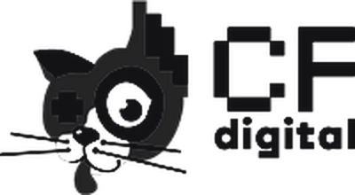
CF.Digital Партнер ВРК 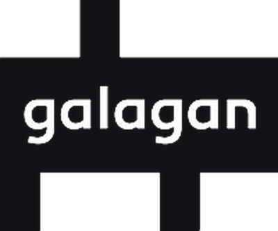
Galagan Партнер ВРК
Катерина Грабовська Генеральна директорка ВРК Дирекція Катерина Грабовська Генеральна директорка ВРК Олена Андрієнко Publicis Groupe Ukraine Наглядова рада Олена Андрієнко Publicis Groupe Ukraine Напрям у раді: GR, правове регулювання рекламної діяльності 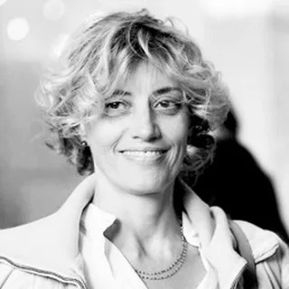
Олена Безхлібна BigBoard Наглядова рада Олена Безхлібна BigBoard Напрям у раді: Out Of Home media Аліна Котенко Initiative Наглядова рада Аліна Котенко Initiative Напрям у раді: Комітет медіаагенцій 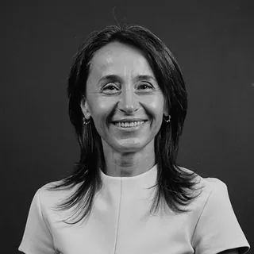
Олена Бакум-Рамола Publicis Groupe Ukraine Наглядова рада Олена Бакум-Рамола Publicis Groupe Ukraine Напрям у раді: Комітет креативних агенцій Дмитро Кутовой Nostra Communications Group Наглядова рада Дмитро Кутовой Nostra Communications Group Напрям у раді: Foreign Markets Access 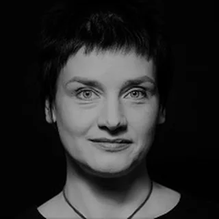
Олена Лобова Change Communication Наглядова рада Олена Лобова Change Communication Напрям у раді: PR-агенції та галузь Іван Дубінський Factum Group Ukraine Наглядова рада Іван Дубінський Factum Group Ukraine Напрям у раді: Дослідження рекламного ринку Ірина Кузнєцова DIALLA Communications Наглядова рада Ірина Кузнєцова DIALLA Communications Напрям у раді: Національне представництво Cannes Lions 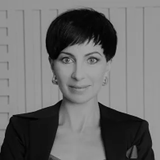
Ірина Муштіна CF.Digital Наглядова рада Ірина Муштіна CF.Digital Напрям у раді: Digital Development Комітет Наталія Морозова Havas Village Ukraine Наглядова рада Наталія Морозова Havas Village Ukraine Напрям у раді: Маркетингові сервіси: агентства та ринок Ігор Полосьмак 1+1 Media Наглядова рада Ігор Полосьмак 1+1 Media Напрям у раді: Оцінка обсягів рекламного ринку Світлана Степаненко BetterSvit Наглядова рада Світлана Степаненко BetterSvit Напрям у раді: Освіта для рекламістів і маркетологів 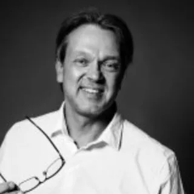
Дмитро Федоренко Seventeam Наглядова рада Дмитро Федоренко Seventeam Напрям у раді: Військова реклама